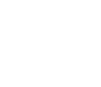
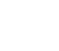
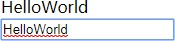
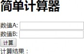
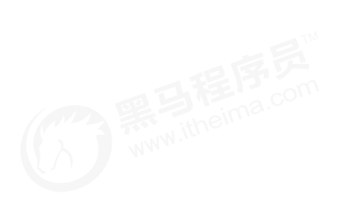
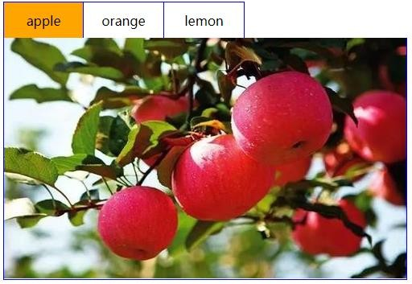
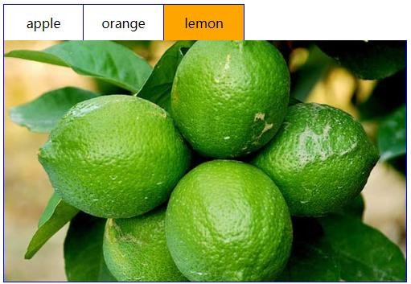

Vue概述
Vue基本使用
Vue模板语法
基础案例
Vue常用特性
综合案例
目


Contents


2014年2月，Vue.js正式发布
2015年10月27日，正式发布1.0.0
2016年4月27日，发布2.0的预览版本


声明式渲染组件系统客户端路由集中式状态管理项目构建
易用：熟悉HTML、CSS、JavaScript知识后，可快速上手Vue
灵活：在一个库和一套完整框架之间自如伸缩
高效：20kB运行大小，超快虚拟 DOM

Vue概述
Vue基本使用
Vue模板语法
基础案例
Vue常用特性
综合案例
目


Contents


原生JS
<div id="msg"></div>
<script type="text/javascript">
var msg = 'Hello World';
var div = document.getElementById('msg');
div.innerHTML = msg;
</script>
jQuery
var msg = 'Hello World';
$('#msg').html(msg);
</script>
<div id="msg"></div>
<script type="text/javascript" src="js/jquery.js"></script>
<script type="text/javascript">


<div id="app">
<div>{{msg}}</div>
</div>
<script type="text/javascript" src="js/vue.js"></script>
<script type="text/javascript">
new Vue({
el: '#app', Vue
data: {
msg: 'HelloWorld'
}
})
</script>


el： 元素的挂载位置（值可以是CSS选择器或者DOM元素）
Vue
代码
Vue框架
原生js
代码
 

data：模型数据（值是一个对象）
将数据填充到HTML标签中
插值表达式支持基本的计算操作
概述编译过程的概念（Vue语法原生语法）

Vue概述
Vue基本使用
Vue模板语法
基础案例
Vue常用特性
综合案例
目


Contents


把数据填充到HTML标签中
前端渲染
静态HTML内容
数据
模板


原生js拼接字符串
使用前端模板引擎
使用vue特有的模板语法


基本上就是将数据以字符串的方式拼接到HTML标
签中，前端代码风格大体上如右图所示。
缺点：不同开发人员的代码风格差别很大，随着业
务的复杂，后期的维护变得逐渐困难起来。
var d = data.weather;
var info = document.getElementById('info');
info.innerHTML = '';
for(var i=0;i<d.length;i++){
var date = d[i].date;
var day = d[i].info.day;
var night = d[i].info.night;
var tag = '';
tag += '<span>日期：'+date+'</sapn><ul>';
tag += '<li>白天天气：'+day[1]+'</li>'
tag += '<li>白天温度：'+day[2]+'</li>'
tag += '<li>白天风向：'+day[3]+'</li>'
tag += '<li>白天风速：'+day[4]+'</li>'
tag += '</ul>';
var div = document.createElement('div');
div.innerHTML = tag;
info.appendChild(div);
}


<script id="abc" type="text/html">
{{if isAdmin}}
<h1>{{title}}</h1>
<ul>
{{each list as value i}}
<li>索引 {{i + 1}} ：{{value}}</li>
{{/each}}
</ul>
{{/if}}
</script>

右侧代码是基于模板引擎art-template的一段代
码，与拼接字符串相比，代码明显规范了很多，
它拥有自己的一套模板语法规则。
优点：大家都遵循同样的规则写代码，代码可读性
明显提高了，方便后期的维护。
缺点：没有专门提供事件机制。


差值表达式
指令
事件绑定
属性绑定
样式绑定
分支循环结构


什么是自定义属性
指令的本质就是自定义属性
指令的格式：以v-开始（比如：v-cloak）
插值表达式存在的问题：“闪动”
如何解决该问题：使用v-cloak指令
解决该问题的原理：先隐藏，替换好值之后再显示最终的值


v-text 填充纯文本
① 相比插值表达式更加简洁
v-html 填充HTML片段
① 存在安全问题
② 本网站内部数据可以使用，来自第三方的数据不可以用
v-pre 填充原始信息
① 显示原始信息，跳过编译过程（分析编译过程）


如何理解响应式
① html5中的响应式（屏幕尺寸的变化导致样式的变化）
② 数据的响应式（数据的变化导致页面内容的变化）
什么是数据绑定
① 数据绑定：将数据填充到标签中
v-once 只编译一次
① 显示内容之后不再具有响应式功能


什么是双向数据绑定？

这里的变化会导致上面的内容跟着变化
双向数据绑定分析
v-model指令用法
ViewModel
<input type='text' v-model='uname'/>
MVVM设计思想
① M(model)
② V(view)
③ VM(View-Model)
View
DOM
DOM Listeners
Data Bindings
Vue
Model
Plain JavaScript Objects


<input type=‘button' v-on:click='num++'/>
v-on指令用法
v-on简写形式
<input type=‘button' @click='num++'/>
<button v-on:click='say'>Hello</button>
直接绑定函数名称
调用函数
<button v-on:click='say()'>Say hi</button>
<button v-on:click='say("hi",$event)'>Say hi</button>
普通参数和事件对象


<a v-on:click.stop="handle">跳转</a>
.stop 阻止冒泡
.prevent 阻止默认行为
<a v-on:click.prevent="handle">跳转</a>
<input v-on:keyup.enter='submit'>
.enter 回车键
.esc 退出键
<input v-on:keyup.delete='handle'>
全局 config.keyCodes 对象
Vue.config.keyCodes.f1 = 112


案例：简单计算器

需求：实现简单的加法计算，分别输入数值a和数值b
，点击计算按钮，结果显示在下面。


案例：需求分析

① 通过v-model指令实现数值a和数值b的绑定
② 给计算按钮绑定事件，实现计算逻辑
③ 将计算结果绑定到对应位置


<a v-bind:href='url'>跳转</a>
v-bind指令用法
<a :href='url'>跳转</a>
缩写形式
<input v-bind:value="msg" v-on:input="msg=$event.target.value">


<div v-bind:class="{ active: isActive }"></div>
对象语法
<div v-bind:class="[activeClass, errorClass]"></div>
数组语法
<div v-bind:style="{ color: activeColor, fontSize: fontSize }"></div>
对象语法
数组语法
<div v-bind:style="[baseStyles, overridingStyles]"></div>


v-if
v-else
v-else-if
v-show
v-if控制元素是否渲染到页面
v-show控制元素是否显示（已经渲染到了页面）


v-for遍历数组
<li v-for='item in list'>{{item}}</li>
<li v-for='(item,index) in list'>{{item}} + '---' +{{index}}</li>
key的作用：帮助Vue区分不同的元素，从而提高性能
<li :key='item.id' v-for='(item,index) in list'>{{item}} + '---' {{index}}</li>


v-for遍历对象
<div v-for='(value, key, index) in object'></div>
v-if和v-for结合使用
<div v-if='value==12' v-for='(value, key, index) in object'></div>

Vue概述
Vue基本使用
Vue模板语法
基础案例
Vue常用特性
综合案例
目


Contents




案例：Tab选项卡


案例：Tab选项卡



案例：Tab选项卡


Vue模板
Vue实例对象
前端
功能
Js控制
逻辑


案例：实现步骤
用传统的方式实现标签结构和样式
将静态的结构和样式重构为基于Vue模板语法的形式
处理事件绑定和js控制逻辑
模板的结构和最终显示的效果基本一致